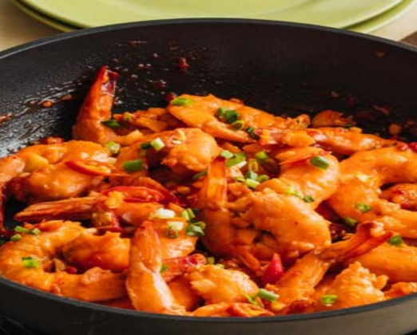

Buttered Shrimp

Ingredients
- 1 sachet, MAGGI Magic Sarap 8g
- 4 tbsp butter
- 1 head garlic
- 2 tbsp brown sugar
- 0.25 cup banana catsup
- 1 tbsp spring onion
Cooking Instructions
- Season shrimp with MAGGI Magic Sarap for 2 mins.
- Saute shrimp in 2 tbsp of butter over high heat for 1 minute. Remove and set for 3 minutes.
- Melt remaining butter in the same pan and saute garlic. Add sugar, catsup and sauteed shrimp for 5 minutes.
- Transfer on a serving plate and garnish with spring onion. Enjoy!